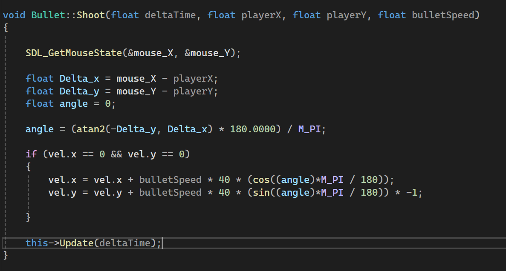
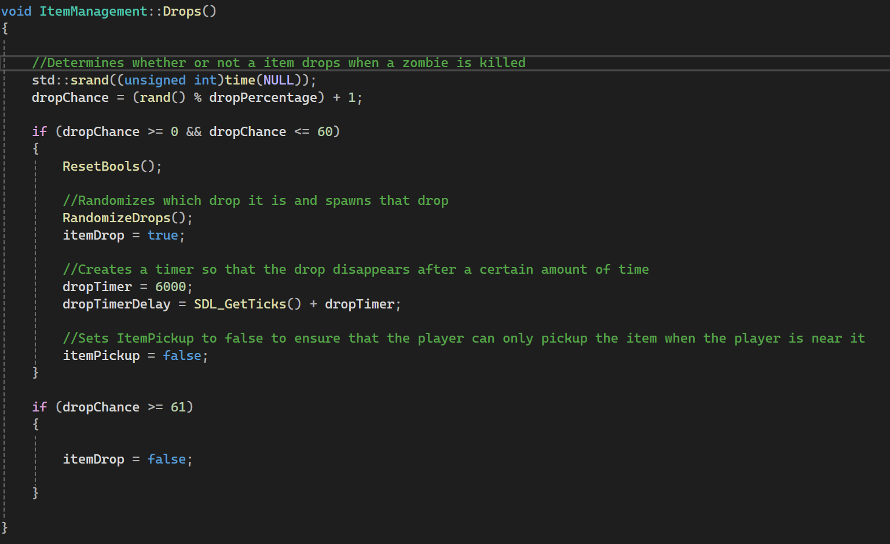

Game Developer | Programmer | Designer
I worked on this project alongisde three others for my Midstone project for Humber's Game Programming Program. The goal of this project was to create a working demo whilst learning how to work and communicate within a team. We were given the restriction of using a C++ SDL framework as our engine for our game.
The main thing that I worked on was the player movement and player rotation. I wanted the player to rotate towards the mouse at all times so I implemented a system where the mouse cursors x and y position would be tracked and it would be used to calculate the players rotation.
I also worked on the enemy spawning system. With the limited knowledge of SDL it was harder to implement this system in a dynamic way so I instead created a workaround. I set up over a dozen spawn locations that the enemy could spawn in and I put those locations into an array. Every time an enemy spawned after a set amount of time, the spawner class would randomly choose a location from this array and spawn that enemy at that location. I also improved this logic and made it so an enemy wouldn't spawn in the same location twice in a row.
I worked on the gun mechanics as well. I made it so when the player pressed the fire button a bullet was spawned and given the direction of where the gun was pointed at. I used a similar spawning system for the bullet as I used for the enemies except the position was calculated based on the guns location. I also implemented logic for the gun to rotate in the same direction as the player and for the bullet to follow the guns rotation when it is spawned.
The last major system I worked on was the item drop system. The inspiration I had for this system was the drops system from Call Of Duty Zombies. I designed this system to have a random chance of dropping an item any time an enemy is killed. Then if an item is dropped it randomly selects from the list of items that are in the game.
This project provided great experience on how to work within a team and how to communciate between different roles when making a game.